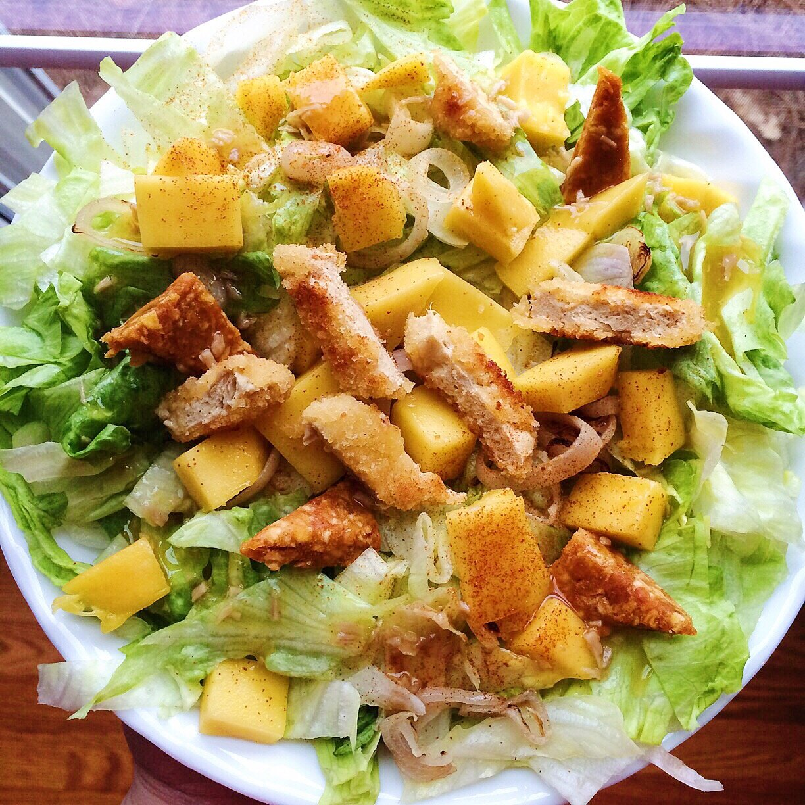

Chili Mango Salad (vegan, gluten free)

A simple, fruity, and delicious vegan salad packed with huge flavor. This chili mango salad makes it enjoyable to eat a nutritious, wholesome meal. Ready in no time!
For this salad, there are two vital ingredients that make it oh-so-wonderful. First is one of the new zesty bars by That's It that I recently posted about. These wholesome bars are usually just 2 ingredients (100% dried fruit: apple + another fruit). The new That's it. Zesty. bars come in three different flavors, and I decided to use the apple + mango + chili one for this recipe. The chili is phenomenal.
The second vital ingredient that I'm loving lately is a soy chicken alternative. I've tried a few now, and I prefer the Beyond Meat brand over Gardein and other brands found in the freezer section. For this recipe, I used the homestyle tenders, but for a gluten-free chili mango salad, I highly recommend the lightly seasoned strips! Both great options!
The combination of these flavorful, fruity ingredients combined makes for a unique, delicious, wholesome meal. This salad is vegan, gluten free, and perfect for a quick meal when you're a busy little bee!
Give this chili mango salad a go this week!
Chili Mango Salad
-
2 oz. soy chicken alternative
-
¼ cup chopped onions
-
¼ tsp cayenne pepper
-
½ head of lettuce
-
¼ cup cubed mango
-
1 Apple + Mango + Chili That’s it. Zesty. bar
-
2 TBSP fat free coconut mango salad dressing
-
Prepare the soy chicken (or meat choice) according to the package. Tofu would also be great.
-
Sautee the onions in a pan with cayenne pepper until lightly browned. While that is cooking, cut your lettuce and add to a large bowl.
-
Add cubed mango and 1 Apple + Mango + Chili That’s it. Zesty. bar that has been cut into small cubes. This adds sooo much flavor to the salad.
-
Add your cooked soy chicken and onions, then top with salad dressing. Add more cayenne if desired.
-
Enjoy!